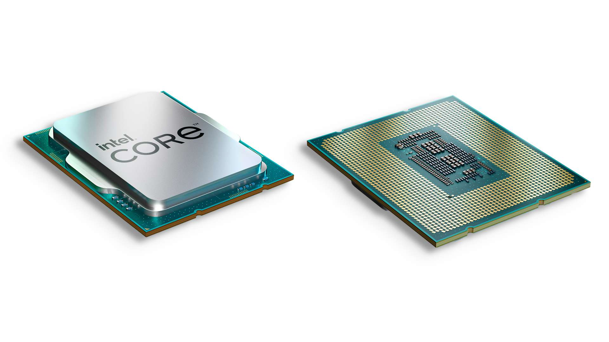
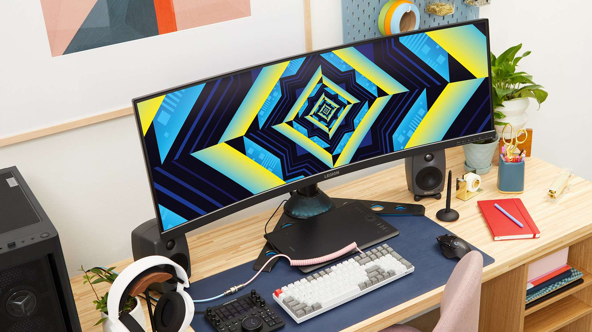

Jak działają procesory Intel® Core™ trzynastej generacji
Obsługa nowej generacji. Ulepszone podkręcanie. Rewolucyjna konstrukcja hybrydowa. Poznaj wnętrze procesorów Intel® Core™ trzynastej generacji do komputerów stacjonarnych.
Procesory Intel® Core™ trzynastej generacji do komputerów stacjonarnych są już dostępne, oferując jeszcze większe możliwości. Na przykład procesor Intel® Core™ i9-13900K ma do 24 rdzeni, 32 wątki i maksymalną częstotliwość turbo 5,8 GHz — jest idealny na potrzeby rozgrywki FPS z wysoką liczbą klatek na sekundę i uruchamiania wielu aplikacji wymagających dużej ilości zasobów.
Oprócz wyższych prędkości zegara i większej liczby rdzeni, procesory Intel® Core™ trzynastej generacji do komputerów stacjonarnych zawierają technologie, które jeszcze bardziej zwiększają wydajność. Najważniejszą z nich jest najnowsze osiągnięcie firmy Intel w zakresie architektury hybrydowej. Ta przełomowa technologia, wprowadzona w dwunastej generacji, zwiększa wydajność rdzeni i zapewnia inteligentną optymalizację obciążeń poprzez zintegrowanie dwóch mikroarchitektur rdzenia w jednym układzie scalonym. Jednocześnie technologia Intel® Thread Director pomaga zoptymalizować wydajność w trybie wielozadaniowości.
Kolejnym ważnym elementem jest szerokie wsparcie dla najnowocześniejszych standardów i specyfikacji. Platforma trzynastej generacji zapewnia dostęp do najnowszych i najbardziej wydajnych komponentów komputera PC, w tym pamięci DDR5, urządzeń PCIe 5.0 i 4.0, routerów Wi-Fi 6E obsługujących prawie 3x szybszą łączność oraz najlepszych wyświetlaczy i urządzeń zewnętrznych za pośrednictwem standardu Thunderbolt 4.
Co to oznacza w przypadku grania? Przede wszystkim laptop lub komputer stacjonarny na platformie trzynastej generacji przeznaczony do grania zapewnia więcej możliwości.
Co to jest wydajna architektura hybrydowa?
Procesory Intel® Core™ trzynastej generacji do komputerów stacjonarnych dostosowują się do sposobu, w jaki pracujesz i grasz. Podczas grania procesor uniemożliwia zadaniom w tle przerywanie lub wykorzystywanie rdzeni o dużej wydajności, co zapewnia płynniejszą rozgrywkę. Podczas wykorzystywania systemu do ogólnych zadań obliczeniowych, takich jak praca z materiałem wideo 4K podczas słuchania muzyki i zarządzania kanałem, procesor zapewnia bardziej płynne działanie systemu.
Procesory trzynastej generacji do komputerów stacjonarnych łączą dwa rodzaje rdzeni w jednym układzie scalonym: wydajne rdzenie Performance (P-core) i elastyczne rdzenie Efficient (E-core). Oba rodzaje rdzeni pełnią inne funkcje.
Cechy rdzeni Performance-core:
- Rdzenie o dużej wydajności i większych wymiarach, zapewniające dużą szybkość bez ograniczenia efektywności.
- Dostosowane do wysokich częstotliwości turbo i wysokich wartości IPC (instrukcje na cykl).
- Idealne do wymagających zadań jednowątkowych charakterystycznych dla wielu silników gier.
- Z funkcją hyper-threadingu, oznaczającą uruchamianie dwóch wątków oprogramowania jednocześnie.
Cechy rdzeni Efficient-core:
- Mniejsze wymiary umożliwiają zmieszczenie wielu rdzeni E-core w fizycznej przestrzeni jednego rdzenia P-core.
- Zaprojektowane w celu maksymalizacji wydajności procesora mierzonej jako wydajność na wat.
- Idealne na potrzeby wydajności skalowalnych procesów wielowątkowych. Współpracują z rdzeniami P-core w celu przyspieszenia zadań wymagających dużej ilości rdzeni (na przykład renderowania materiału wideo).
- Zoptymalizowane na potrzeby wydajnego wykonywania zadań w tle. Mniejsze zadania, takie jak obsługa programu Discord lub oprogramowania antywirusowego, mogą zostać przesłane do rdzeni E-core, zwalniając rdzenie P-core w celu zwiększenia wydajności podczas grania.
- Obsługa pojedynczych wątków oprogramowania.
Co to jest kontroler Intel® Thread Director?
Kontroler Intel® Thread Director działa w tle, umożliwiając maksymalizację wydajności hybrydowej.
Wbudowany bezpośrednio w sprzęt kontroler Thread Director wykorzystuje uczenie maszynowe do przydzielania zadań odpowiednim rdzeniom w odpowiednim czasie (w przeciwieństwie do statycznych reguł przydzielania). Ułatwia to współpracę między rdzeniami Performance i Efficient; zadania w tle nie spowalniają pracy, a użytkownik może otworzyć więcej aplikacji jednocześnie.
Jak działa Intel® Thread Director:
- Ten składnik monitoruje zestawy instrukcji wykonawczych poszczególnych wątków i stan rdzeni z dokładnością na poziomie nanosekund.
- Korzystając z uzyskanych w ten sposób w czasie wykonania informacji zwrotnych, system operacyjny podejmuje optymalne decyzje dotyczące obciążeń roboczych.
- Kontroler dynamicznie dostosowuje swoje zalecenia zależnie od projektowej mocy cieplnej (TDP) systemu, warunków eksploatacji i ustawień zasilania.
Identyfikując klasy poszczególnych obciążeń roboczych oraz korzystając z własnego mechanizmu obliczania energii i wydajności, kontroler Intel® Thread Director ułatwia systemowi operacyjnemu dopasowanie wątków w celu optymalizacji wydajności lub efektywności rdzeni.
Efektem jest wzrost wydajności w wielu wymagających scenariuszach związanych z graniem, takich jak streamowanie gry i jednoczesne nagrywanie materiału z rozgrywki. Rozgrywka jest płynniejsza z większą liczbą klatek na sekundę, obserwujący Twój kanał oglądają transmisję o wyższej jakości, a nagrany materiał z rozgrywki wygląda lepiej.
Jakie są zalety technologii Intel® Turbo Boost Max 3.0?
Technologia Intel® Turbo Boost Max 3.0 umożliwia dodatkowe zwiększenie wydajności w trybie przetwarzania niewielkiej liczby wątków. Niespójność procesu produkcji powoduje zróżnicowanie szybkości rdzeni, dlatego niektóre z nich zapewniają wyższą wydajność i obsługują niższe napięcie, a niektóre rdzenie P-core mogą uzyskać lepsze wyniki niż inne.
Technologia Turbo Boost Max 3.0 wykorzystuje te różnice, identyfikując najlepsze rdzenie P-core w procesorze i przypisując do nich zadania. Umożliwia to zwiększenie wydajność bez konieczności podwyższania napięcia i przekraczania specyfikacji procesora.
Co to jest pamięć DDR5?
Platforma procesora Intel® Core™ trzynastej generacji umożliwia istotny wybór w zakresie wykorzystywanej pamięci: DDR4 lub DDR5 RAM.
W specyfikacji nowej generacji DDR5 pamięci RAM wprowadzono wiele ulepszeń zapewniających większą szybkość i efektywność w porównaniu z obecnym standardem DDR4.
- Zestawy o większej przepustowości dzięki dwukrotnie większej długości serii bitów odczytywanych w pojedynczym cyklu.
- Trzynasta generacja obsługuje prędkości do 5,600 MT/s w przypadku DDR5 i 3,200 MT/s w przypadku DDR4.
- W specyfikacji DDR5 uwzględniono pojemności nawet do 128 GB pamięci RAM, podczas gdy pojemność pamięci DDR4 nie może przekraczać 32 GB.
- Specyfikacja DDR5 zapewnia obsługę dwukrotnie większej liczby grup banków pamięci i większych szybkości odświeżania grup.
Procesor trzynastej generacji Intel® Core™ do komputerów stacjonarnych umożliwia zbudowanie systemu z wykorzystaniem sprawdzonych pamięci DDR4 lub nowych pamięci DDR5. Jeśli zdecydujesz się pozostać na razie przy pamięci DDR4, procesor Intel® Core™ trzynastej generacji umożliwia modernizację do DDR5 w przyszłości.
Wszystkie procesory Intel® Core™ trzynastej generacji do komputerów stacjonarnych zapewniają odblokowaną obsługę pamięci, co daje większą swobodę w dostosowaniu wydajności pamięci RAM. Użycie profili DDR5 w połączeniu z technologią Intel® Extreme Memory Profile 3.0 (XMP 3.0) ułatwia podkręcenie pamięci i tworzenie nowych niestandardowych profili w celu dostosowania funkcjonowania systemu.
Co to jest PCIe 5.0?
Procesory Intel® Core™ trzynastej generacji do komputerów stacjonarnych są najważniejszym elementem procesu przejścia branży do standardu PCIe 5.0. Standard PCIe 5.0 zapewnia przepustowość dwukrotnie większą niż standard PCIe 4.0, dlatego umożliwia przygotowanie systemów do obsługi nowej generacji dysków SSD i autonomicznych procesorów graficznych (GPU).
PCIe to magistrala rozszerzeń. Może przesyłać dane z dużą prędkością i jest wykorzystywana w celu podłączania do płyty głównej szybkich urządzeń peryferyjnych, takich jak karty graficzne i dyski SSD. Każda generacja magistrali PCIe zapewnia dwukrotnie większą przepustowość (maksymalna teoretyczna szybkość transmisji danych 32 GT/s w przypadku PCIe 5.0).
Zalety przyjęcia standardu PCIe 5.0 obejmują:
- pełna zgodność ze starszymi urządzeniami (PCIe 4.0 i PCIe 3.0);
- przepustowość dwukrotnie większa w porównaniu z wersją 4.0 i czterokrotnie większa w porównaniu z wersją 3.0;
- Do 16 linii procesora PCIe 5.0 i do 4 linii procesora PCIe 4.0, przy czym chipset Intel® 700 Series może obsługiwać dodatkowo 8 kolejnych linii PCIe 4.0.
Jak procesory Intel® Core™ trzynastej generacji do komputerów stacjonarnych obsługują podkręcanie?
Architektura procesorów Intel® Core™ trzynastej generacji do komputerów stacjonarnych umożliwia użytkownikom z odblokowanymi procesorami zaawansowane dostrajanie. Niezależna kontrola podkręcania rdzeni P-core i E-core umożliwia dostosowywanie sposobu funkcjonowania rdzeni w zależności od potrzeb.
Skorzystaj z najnowszych wersji narzędzi do podkręcania firmy Intel, aby w pełni wykorzystać możliwości systemów trzynastej generacji:
- Intel® Extreme Tuning Utility (Intel® XTU) zapewnia zaawansowany zestaw narzędzi do podkręcania zarówno początkujących, jak i doświadczonych użytkowników. Najnowsza wersja zapewnia większą kontrolę nad procesem podkręcania dzięki nowym elementom do zaawansowanego dostrajania rdzeni E-core oraz danym telemetrycznym na potrzeby szczegółowej analizy wydajności.
- Intel Speed Optimizer (ISO) to uruchamiane jednym kliknięciem narzędzie wbudowane w najnowszą wersję Intel® XTU. Dostępne w odblokowanych procesorach Intel® Core™ i9 trzynastej generacji, przeprowadza automatyczne podkręcanie po przeanalizowaniu indywidualnej wydajności procesora.
- Intel® Extreme Memory Profile (XMP 3.0) ułatwia podkręcanie pamięci RAM DDR5. Technologia XMP 3.0, dostępna wyłącznie w przypadku pamięci DDR5, wprowadza szereg ulepszeń do procesu podkręcania pamięci RAM, w tym do pięciu profili, dwa profile z możliwością dostosowania oraz dodatkowe sterowanie napięciem.
- Technologia Intel® Dynamic Memory Boost dostępna z poziomu aplikacji Intel® XMP automatycznie przełącza na profil pamięci o wysokiej częstotliwości podczas wymagających zastosowań, takich jak granie, przeprowadzając podkręcanie pamięci RAM w razie potrzeby, a następnie powracając do domyślnych specyfikacji. Obsługiwane są moduły pamięci DDR4 i DDR5.
Co to jest Intel® Wi-Fi 6E?
Intel® Wi-Fi 6E to największy krok naprzód w dziedzinie Wi-Fi od dłuższego czasu, zapewniający prawie 3-krotnie szybszą łączność w porównaniu ze standardową siecią Wi-Fi. Główną zaletą nowego standardu jest wykorzystanie pasma częstotliwości 6 GHz. Urządzenia Wi-Fi 6E mogą pracować w paśmie 6 GHz, dzięki czemu transmisja danych może być szybsza i bardziej niezawodna ze względu na zwiększenie liczby oraz szerokości kanałów.
Wi-Fi 6E zapewnia:
- Szybkości bezprzewodowe Gig+ — do 1700 Mb/s w idealnych warunkach. To prawie trzy razy więcej w porównaniu ze standardem Wi-Fi 5.
- Nawet o 75% mniejsze opóźnienia w porównaniu z Wi-Fi 5.
- Pasmo 6 GHz na wyłączność, co zapobiega zakłóceniom przez starsze urządzenia.
Jakie korzyści na potrzeby grania zapewnia technologia Intel® Wi-Fi 6E? Przede wszystkim gry uruchamiane na systemie wyposażonym w kartę Intel® Wi-Fi 6E charakteryzują się mniejszymi opóźnieniami ruchu sieciowego. Sieć jest mniej zatłoczona, ponieważ dane są przesyłane za pośrednictwem nowego, szerszego pasma 6 GHz. Efektem jest wyeliminowanie problemów z łącznością, takich jak utrata pakietów i rosnące wartości opóźnień transmisji (ping) które są powszechnym problemem podczas grania online.
Aby uzyskać najbardziej niezawodne połączenie z serwerami gier za pośrednictwem sieci Wi-Fi, szukaj systemu z procesorem Intel® Core™ trzynastej generacji i kartą Intel® Killer™ Wi-Fi 6E. Te karty zostały opracowane specjalnie w celu rozwiązywania problemów opóźnień podczas grania.
Zastosowano w nich takie technologie, jak silnik priorytetyzacji Intel® Killer™ który automatycznie nadaje w sieci priorytet ruchowi związanemu z graniem oraz Intel® Killer™ DoubleShot™ Pro, która umożliwia systemowi jednoczesne korzystanie z sieci Wi-Fi i Ethernet w celu optymalizacji połączenia.
Co to jest Thunderbolt™ 4?
Procesory Intel® Core™ trzynastej generacji do komputerów stacjonarnych obsługują technologię Thunderbolt™ 4, wszechstronny interfejs połączeń kablowych opracowany przez firmę Intel.
Dzięki dwukierunkowej przepustowości 40 Gb/s porty Thunderbolt™ 4 umożliwiają podłączenie wielu urządzeń o wysokiej wydajności, takich jak szybkie zewnętrzne dyski SSD, monitory do grania z częstotliwością 240 Hz w rozdzielczości 1080P oraz urządzenia do przechwytywania materiału wideo podczas streamowania. Są one zgodne z szeroką gamą urządzeń (w tym z gniazdami DisplayPort, USB4, zewnętrznymi PCIe i starszymi urządzeniami Thunderbolt), dzięki czemu można ich używać jako koncentratora do obsługi wszystkich wykorzystywanych urządzeń.
Z tych powodów porty Thunderbolt™ 4 doskonale sprawdzają się podczas tworzenia systemu do grania, stacji roboczej lub konfiguracji do streamowania. Inną możliwością jest przekształcenie laptopa w komputer stacjonarny poprzez podłączenie urządzeń takich jak dwa monitory, klawiatury mechaniczne, dyski zewnętrzne lub mikrofony. Do jednego portu Thunderbolt™ 4 można podłączyć nawet pięć urządzeń.
Wzrost wydajności następnej generacji
Procesory Intel® Core™ trzynastej generacji zapewniają niezrównaną wydajność wtedy, kiedy potrzebujesz jej najbardziej. Nieważne, czy chcesz zwiększyć liczbę klatek na sekundę, czy wykonać jednocześnie więcej działań podczas pracy twórczej, nowa wydajna architektura hybrydowa rdzeni P-core/E-core ma to, czego potrzebujesz.
Oprócz zwiększonej wydajności, procesory Intel® Core™ trzynastej generacji mają wbudowaną obsługę najnowszych rozwiązań technologicznych. System z procesorem Intel® Core™ trzynastej generacji umożliwia wykorzystanie technologii DDR5, PCIe 5.0, Wi-Fi 6E i Thunderbolt™ 4, które wspólnie zapewniają komfortową pracę na komputerze — teraz i w przyszłości.